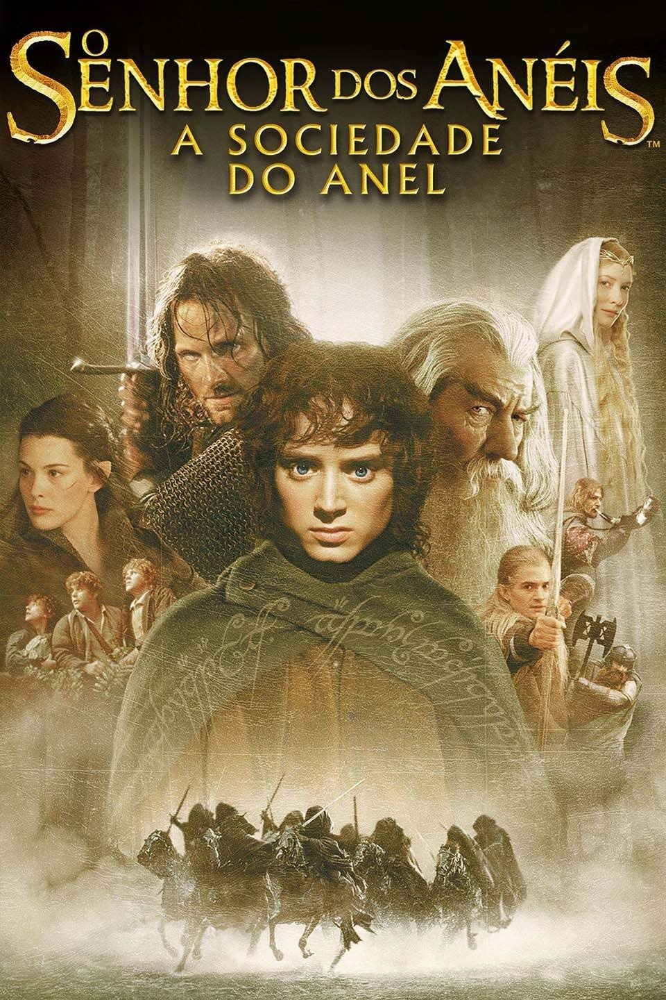
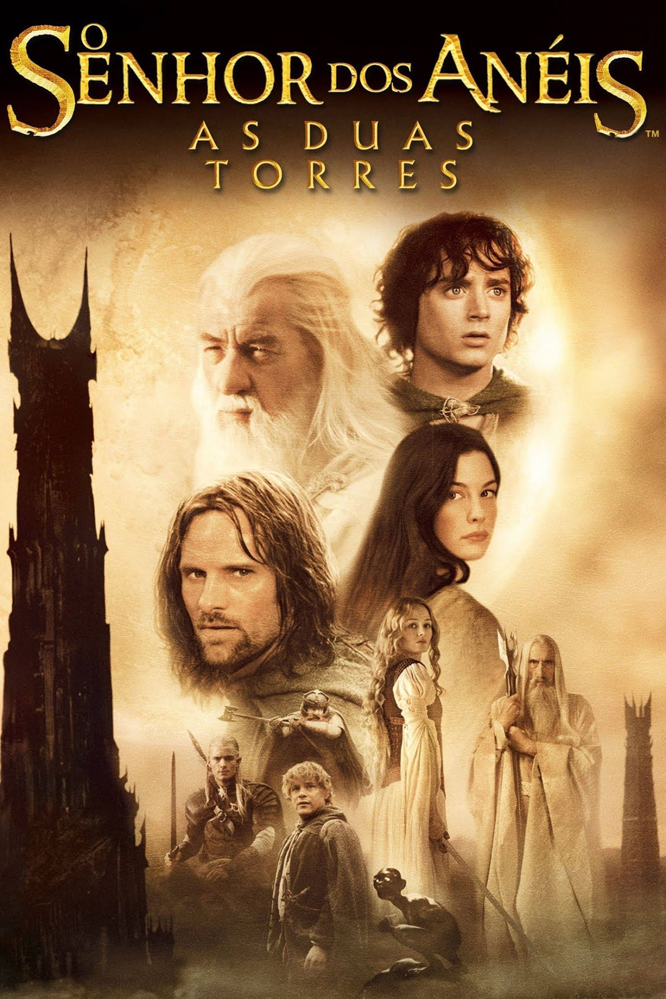

Senhor dos Anéis
A história narra o conflito contra o mal que se alastra pela Terra-média, através da luta de várias raças -
Humanos, Anãos, Elfos, Ents e Hobbits - contra Orques, para evitar que o "Anel do Poder" volte às mãos de
seu criador Sauron, o Senhor Sombrio.
O Senhor dos Anéis: A Sociedade do Anel

Sinopse:
Em uma terra fantástica e única, um hobbit recebe de presente de seu tio um anel mágico e maligno que
precisa ser destruído antes que caia nas mãos do mal. Para isso, o hobbit Frodo tem um caminho árduo pela
frente, onde encontra perigo, medo e seres bizarros. Ao seu lado para o cumprimento desta jornada, ele aos
poucos pode contar com outros hobbits, um elfo, um anão, dois humanos e um mago, totalizando nove seres que
formam a Sociedade do Anel.
Assista ao Trailer
O Senhor dos Anéis: As Duas Torres

Sinopse:
Após a captura de Merry e Pippy pelos orcs, a Sociedade do Anel é dissolvida. Frodo e Sam seguem sua jornada
rumo à Montanha da Perdição para destruir o anel e descobrem que estão sendo perseguidos pelo misterioso
Gollum. Enquanto isso, Aragorn, o elfo e arqueiro Legolas e o anão Gimli partem para resgatar os hobbits
sequestrados e chegam ao reino de Rohan, onde o rei Theoden foi vítima de uma maldição mortal de Saruman.
Assista ao Trailer
O Senhor dos Anéis: O Retorno do Rei

Sinopse:
O confronto final entre as forças do bem e do mal que lutam pelo controle do futuro da Terra Média se
aproxima. Sauron planeja um grande ataque a Minas Tirith, capital de Gondor, o que faz com que Gandalf e
Pippin partam para o local na intenção de ajudar a resistência. Um exército é reunido por Theoden em Rohan,
em mais uma tentativa de deter as forças de Sauron. Enquanto isso, Frodo, Sam e Gollum seguem sua viagem
rumo à Montanha da Perdição para destruir o anel.
Assista ao Trailer